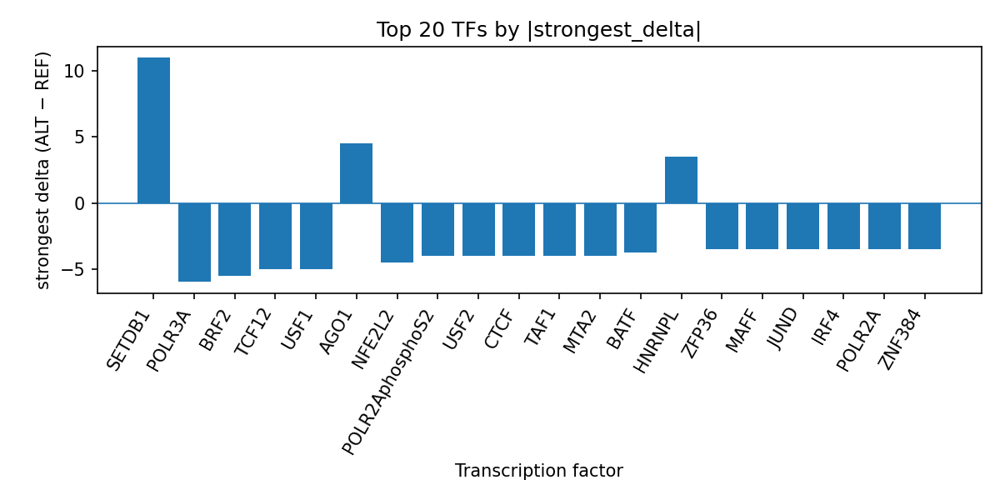

Author: snv-tf-researcher
The GWAS candidate variant rs186021206 (chr17:7166093 G>A) was analyzed for predicted transcription factor (TF) ChIP-seq consequences in the context of blood tumor necrosis factor ligand superfamily member 6 level. The variant was selected by effect size and is annotated as an upstream_gene_variant, intron_variant, and non_coding_transcript_variant. AlphaGenome computational predictions prioritized multiple TFs with allele-dependent changes in predicted binding, including strong promotion of SETDB1 and inhibition of POLR3A, BRF2, TCF12, USF1, NFE2L2, MTA2, TAF1, CTCF, POLR2AphosphoS2, USF2, and others. These predictions are hypothesis-generating and require experimental validation. The literature review identified published studies describing soluble Fas/Fas ligand-related biomarkers, apoptosis signaling, and immune regulation in blood and disease contexts, which provide a biological frame for interpreting the predicted TF perturbation [1-15]. Overall, the computational output suggests that rs186021206 may alter regulatory programs relevant to transcriptional control, but it does not establish mechanism or causality.
Blood levels of tumor necrosis factor ligand superfamily member 6 have been queried here through a GWAS-to-prediction workflow centered on rs186021206. The selected variant is a noncoding SNV with a strong GWAS p-value and a moderate absolute effect size, making it a plausible regulatory candidate for downstream prioritization. Because the variant was selected by effect size, it may be in linkage disequilibrium with the true causal variant, and this possibility should be considered when interpreting the predictions.
Apoptosis- and death receptor-related soluble biomarkers are widely studied in blood-based disease contexts. Circulating soluble Fas and related receptors have been associated with diabetes and cardiovascular outcomes [15], and soluble death receptor measurements have been linked to β-cell dysfunction in prediabetes and type 2 diabetes [4,13]. Soluble Fas and Fas ligand have also been investigated in inflammatory, cancer, cardiovascular, and immune settings [1-3,5-12,14]. These reports do not establish a specific link to rs186021206, but they support the general relevance of apoptosis-linked regulatory biology in blood.
This study used only the provided structured data. The candidate variant rs186021206 (chr17:7166093 G>A; risk allele rs186021206-A) was analyzed as a GWAS-selected SNV associated with level of tumor necrosis factor ligand superfamily member 6 in blood. Consequence annotations provided in the input included upstream_gene_variant, intron_variant, and non_coding_transcript_variant. No nearest gene was provided.
The manuscript interprets AlphaGenome TF ChIP-seq outputs supplied in the input as computational predictions, not experimental measurements. The predicted ALT-versus-REF effects were summarized at the TF level using the provided tf_summary_top table, which was also referenced through top_tf_effects.tsv in the run folder. The end-to-end workflow included GWAS variant selection, effect-size ranking, consequence annotation, reference-allele checking, AlphaGenome TF ChIP-seq prediction, TF-level summarization, PubMed literature retrieval, and AI-assisted manuscript synthesis (Figure 1).
Figure 1. Workflow overview for the GWAS SNV to AlphaGenome TF ChIP-seq interpretation pipeline. The figure summarizes variant selection, annotation, prediction, TF-level aggregation, literature retrieval, and manuscript generation steps used in this run.
rs186021206 showed a strong GWAS association with the queried trait (p = 2 × 10^-50) and an absolute effect size of 0.4486845. In the AlphaGenome TF ChIP-seq predictions, the ALT allele was associated with both promoted and inhibited TF binding across multiple tracks. The strongest predicted promotion was observed for SETDB1 in HEK293 (delta = +11.0), followed by AGO1 in K562 (+4.5), U2AF2 in K562 (+3.5), RBM17 in K562 (+3.5), and HNRNPL in HepG2 (+3.5). The strongest predicted inhibition was observed for POLR3A in HeLa-S3 (delta = -6.0), BRF2 in HeLa-S3 (-5.5), and several TFs with delta values at or below -5.0, including TCF12 and USF1 (Figure 2).

Figure 2. Top transcription factors at rs186021206 ranked by absolute predicted ALT-versus-REF binding delta from AlphaGenome TF ChIP-seq tracks. Positive values indicate predicted promotion and negative values indicate predicted inhibition; the bar heights reflect the strongest signed delta for each TF.
The broader TF summary showed a predominance of predicted inhibitory effects for factors including CTCF, POLR2AphosphoS2, USF2, TAF1, POLR2A, NFE2L2, MTA2, SIN3A, SP1, ZNF384, JUND, MAFF, SPI1, HNF4G, SMAD2, MAX, and others, while a smaller subset of TFs was predicted to be promoted. These results are compiled in the provided top TF effects table (top_tf_effects.tsv) and indicate that the variant may preferentially disrupt regulatory occupancy across a diverse set of factors rather than acting on a single TF class.
The AlphaGenome predictions suggest that rs186021206 may influence a broad regulatory landscape, with the largest absolute predicted effect observed for SETDB1 and several strong inhibitory effects across polymerase-associated and sequence-specific TFs. Because AlphaGenome outputs are computational predictions, they should be viewed as prioritization signals rather than direct evidence of binding changes, and experimental validation is required. The predominance of inhibitory predictions is consistent with a potential local reduction in regulatory occupancy, but this interpretation remains hypothetical.
The literature available for this run provides a biologic context in which soluble Fas/Fas ligand and related death-receptor pathways participate in inflammatory and apoptotic phenotypes in blood and tissues [1-15]. Prior studies have reported associations between soluble death receptors and β-cell dysfunction [4,13,15], inflammatory biomarker changes in cardiovascular disease [7,10,14], and immune-response modulation in cancer and viral infection settings [1,3,5-9,11,12]. These reports do not validate a mechanistic link to rs186021206, but they are consistent with the relevance of apoptosis-linked signaling in the trait space under study.
Taken together, the variant-level prediction and the literature context suggest that rs186021206 merits follow-up in functional assays designed to test whether the allele alters TF occupancy, chromatin activity, or downstream expression at the relevant locus. Such experiments are necessary to determine whether the computationally prioritized TF perturbations translate into measurable regulatory effects.
This analysis is limited by several factors. First, AlphaGenome TF ChIP-seq outputs are computational predictions and not experimental measurements; therefore, the results are hypothesis-generating only and require validation. Second, the variant was selected by effect size and may be in linkage disequilibrium with the true causal variant. Third, no nearest-gene annotation was provided, which limits locus-level interpretation. Fourth, the literature cited here was restricted to the provided PubMed records and was used only for background context, not for establishing variant causality. Finally, the TF summaries reflect available prediction tracks and may not capture all relevant regulatory mechanisms at this locus.
Songprakhon P, Luangwattananun P, Choomee K, Sawasdee N, Somboonpatarakun C, Chieochansin T, et al. CD138-targeted bispecific protein engager-armed T cells exhibit potent and selective cytotoxicity against multiple myeloma cells. Int Immunopharmacol. 2026;174:116295. PMID: 41687522. doi:10.1016/j.intimp.2026.116295
Ersoy O, Kizilay G. Role of sitagliptin in diabetes-induced testicular damage via the Fas/FasL signalling pathway. Biotechnic Histochem. 2026;101(1):11-20. PMID: 41250986. doi:10.1080/10520295.2025.2583963
Blal K, Rosenblum R, Novak-Kotzer H, Procaccia S, Abu Tair J, Casap N, et al. Immunomodulatory Effects of a High-CBD Cannabis Extract: A Comparative Analysis with Conventional Therapies for Oral Lichen Planus and Graft-Versus-Host Disease. Int J Mol Sci. 2025;26(21):. PMID: 41226746. doi:10.3390/ijms262110711
Ayash R, Kabalan Y, Chamaa S. Association of soluble apoptotic biomarkers (FAS,TNFR1 and TRAIL-R2) with β-cell dysfunction in early glucose dysregulation. BMC Endocr Disord. 2025;25(1):218. PMID: 41034935. doi:10.1186/s12902-025-02001-3
Cabrera-Serrano AJ, Sánchez-Maldonado JM, Rodríguez-Sevilla JJ, Reyes-Zurita FJ, Collado R, Puiggros A, et al. Identification of 4 autophagy-related genetic variants as risk factors for chronic lymphocytic leukemia. Blood Adv. 2025;9(23):6076-6089. PMID: 40902075. doi:10.1182/bloodadvances.2025017345
Freund A, Büttner P, Buske M, Pöss J, Feistritzer HJ, Desch S, et al. Impact of mild therapeutic hypothermia on plasma markers of inflammation and apoptosis in non-resuscitated patients with acute myocardial infarction and cardiogenic shock. Clin Res Cardiol. 2025;114(10):1427-1435. PMID: 40900182. doi:10.1007/s00392-025-02748-8
Fletcher EA, Dabkowski TR, Varkhedi M, Blanck G. Programmatically Efficient Separation of Immune Infiltrate and Tumor Gene Expression Overlap Potentials in a Big Data Setting: FASLG Gene Expression-related Survival Distinctions. Cancer Genomics Proteomics. 2025;22(5):716-724. PMID: 40883027. doi:10.21873/cgp.20531
Lu C, Liang L, Wu Y, Yang Y, Poschel D, Zhao Y, et al. Slc7a5 promotes T cell anti-tumor immunity through sustaining cytotoxic T lymphocyte effector function. Oncogene. 2025;44(41):3939-3954. PMID: 40858813. doi:10.1038/s41388-025-03543-5
Gaspar M, Natoli M, Castan L, Rahmy S, Korade M, Kelton C, et al. An affinity-modulated T cell engager targeting Claudin 18.2 shows potent anti-tumor activity with limited cytokine release. J Immunother Cancer. 2025;13(8):. PMID: 40759445. doi:10.1136/jitc-2025-011857
Hassouna S, Hozman M, Bacova B, Fiserova I, Vesela J, Waldauf P, et al. Markers of apoptosis and cardiac necrosis during the acute phase of catheter ablation using radiofrequency and pulsed-field energy. Biomarkers. 2025;30(4):327-331. PMID: 40678964. doi:10.1080/1354750X.2025.2536009
Wamba BEN, Mondal T, Freenor V F, Shaheed M, Pang O, Bedinger D, et al. Evolutionary regulation of human Fas ligand (CD95L) by plasmin in solid cancer immunotherapy. Nat Commun. 2025;16(1):5748. PMID: 40593750. doi:10.1038/s41467-025-60990-0
Vasconcelos CDS, Salgado MRT, Martins MR, Anunciação CEC, Sobral DV, Torres LC. Soluble sFas, sFasL, sPD1, and sPDL1 Analyses in the Peripheral Blood of Locally Advanced Breast Cancer Patients Before and After Neoadjuvant Chemotherapy. J Surg Oncol. 2025;132(5):817-824. PMID: 40457578. doi:10.1002/jso.27723
Ratkovich-Gonzalez S, Ruiz-Briseño MDR, De Arcos-Jiménez JC, Alvarez-Zavala M, Andrade-Villanueva JF, Martínez-Ayala P, et al. TRAIL (DR5) receptor and the modulation of TRAIL pathway in PLWHIV: key mechanisms in the progression of HIV disease. BMC Mol Cell Biol. 2025;26(1):17. PMID: 40452022. doi:10.1186/s12860-025-00541-z
Lebedeva AM, Pavlovskaya EV, Bagaeva ME, Taran NN, Zubovich AI, Matinyan IA, et al. [Study of the role of biomarkers in determining the course of non-alcoholic fatty liver disease in children with obesity]. Voprosy Pitania. 2025;94(2):85-96. PMID: 40418137. doi:10.33029/0042-8833-2025-94-2-85-96
Mattisson IY, Björkbacka H, Wigren M, Edsfeldt A, Melander O, Fredrikson GN, et al. Elevated Markers of Death Receptor-Activated Apoptosis are Associated with Increased Risk for Development of Diabetes and Cardiovascular Disease. EBioMedicine. 2017;26:187-197. PMID: 29208468. doi:10.1016/j.ebiom.2017.11.023